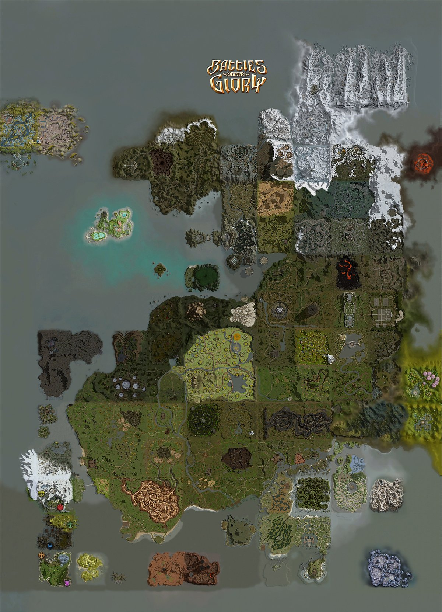
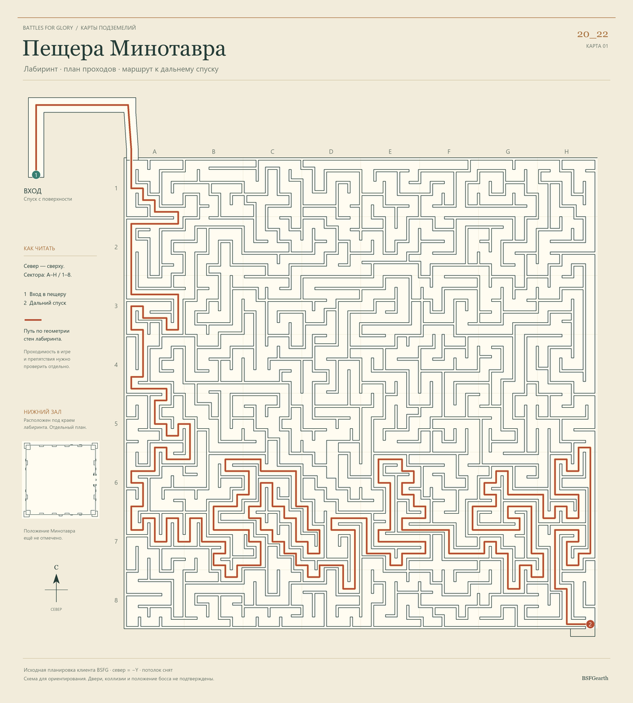

База знаний BSFG
Справочник по Battles for Glory
Открыть карту мираБоссы, города, аванпосты и ресурсы

Загружаю страницу…
Справочник по Battles for Glory
Открыть карту мираБоссы, города, аванпосты и ресурсы

Battles for Glory
Данные клиента BSFG . Каталог показывает характеристики базового предмета и рецепты, записанные в клиенте.
Руководства и карты подземелий Battles for Glory.
Карта пещеры с маршрутом от входа к дальнему спуску.
Как построить личный дом и какие бонусы он даёт.
Аспекты оружия и брони, манускрипты, маунты, Ловец и профессии.
Карта пещеры с маршрутом от входа к дальнему спуску.

Справочник BSFG
Эффекты заточки, свойства экипировки и бонусы по уровням.
Данные клиента BSFG
Планировщик считает одну лычку на ранг. Числовые подсказки взяты из клиентских таблиц наград и медалей. Для ветки PvP и уровней выше таблицы доступно распределение лычек. Лимиты отдельных веток для конкретного предмета задаёт сервер.
Украшения рангов EL и MA. Выберите ранг или найдите нужного босса или предмет.
Боссы и украшения по этому запросу не найдены.
Данные клиента BSFG · Архивная таблица BSFG ↗
База знаний
Описания профессий, умения и ветки развития.
Попробуйте изменить запрос или фильтры.
Если уровня нет, показывается ближайший меньший или минимальный.
Умений с таким названием нет.